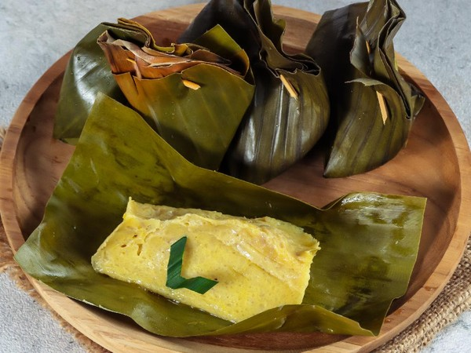

Barongko
Barongko adalah makanan tradisional khas Bugis yang berbahan dasar pisang, telur, santan, dan gula. Hidangan ini dibungkus daun pisang dan dikukus, menghasilkan tekstur lembut dengan rasa manis yang khas.
Bahan-Bahan:
- 5 buah pisang kepok matang
- 100 ml santan kental
- 2 butir telur ayam
- 100 gram gula pasir (sesuai selera)
- Sejumput garam
- Daun pisang secukupnya untuk pembungkus
- Lidi atau tusuk gigi untuk penyemat
Cara Membuat:
- Haluskan pisang kepok hingga lembut menggunakan garpu atau blender.
- Campurkan pisang yang sudah dihaluskan dengan santan, telur, gula pasir, dan sejumput garam. Aduk rata hingga semua bahan tercampur.
- Panaskan daun pisang di atas api kecil agar lebih lentur dan mudah dilipat.
- Ambil selembar daun pisang, letakkan 2-3 sendok makan adonan di tengahnya, lalu lipat dan sematkan lidi atau tusuk gigi agar adonan tidak tumpah.
- Kukus barongko dalam kukusan yang sudah dipanaskan selama 30-40 menit hingga matang.
- Angkat, dinginkan, dan barongko siap disajikan.
Tips:
- Pilih pisang kepok matang agar rasa manis lebih alami.
- Gunakan daun pisang yang segar agar aroma barongko lebih harum.
- Tambahkan sedikit vanili untuk aroma yang lebih menggoda.
Tonton Video Tutorial:
Klik link berikut untuk menonton video tutorial: Tonton Tutorial Membuat Barongko
Back to Home